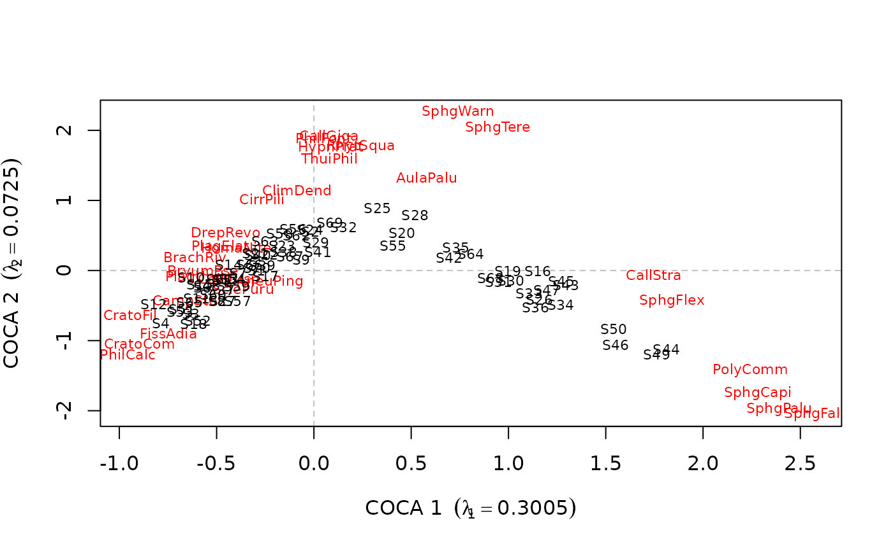

Fit Co-Correspondence Analysis Ordination Models
coca.Rdcoca is used to fit Co-Correspondence Analysis (CoCA)
models. It can fit predictive or symmetric models to two community
data matrices containing species abundance data.
coca(y, ...) # S3 method for default coca(y, x, method = c("predictive", "symmetric"), reg.method = c("simpls", "eigen"), weights = NULL, n.axes = NULL, symmetric = FALSE, quiet = FALSE, ...) # S3 method for formula coca(formula, data, method = c("predictive", "symmetric"), reg.method = c("simpls", "eigen"), weights = NULL, n.axes = NULL, symmetric = FALSE, quiet = FALSE, ...)
Arguments
| y | a data frame containing the response community data matrix. |
|---|---|
| x | a data frame containing the predictor community data matrix. |
| formula | a symbolic description of the model to be fit. The details of model specification are given below. |
| data | an optional data frame containing the variables in the model.
If not found in |
| method | a character string indicating which co-correspondence
analysis method to use. One of |
| reg.method | One of |
| weights | a vector of length |
| n.axes | the number of CoCA axes to extract. If missing (default)
the |
| symmetric | if |
| quiet | logical; suppress messages due to removal of species with no data. |
| ... | additional arguments to be passed to lower level methods. |
Details
coca is the main user-callable function.
A typical model has the form response ~ terms where
response is the (numeric) response data frame and terms
is a series of terms which specifies a linear predictor for
response. A typical form for terms is .,
which is shorthand for "all variables" in data. If . is
used, data must also be provided. If specific species
(variables) are required then terms should take the form
spp1 + spp2 + spp3.
The default is to fit a predictive CoCA model using SIMPLS via a
modified version of simpls.fit from package
pls. Alternatively, reg.method = "eigen" fits the model
using an older, slower eigen analysis version of the SIMPLS
algorithm. reg.method = "eigen" is about 100% slower than
reg.method = "simpls".
Value
coca returns a list with method and reg.method
determining the actual components returned.
list with components namY and
namX containing the names of the response and the
predictor(s) respectively.
the matched call.
the CoCA method used, one of "predictive"
or "symmetric".
the species and site scores of the fitted model.
the site loadings of the fitted model for the response and the predictor. (Predictive CoCA via SIMPLS only.)
the fitted values for the response. A list with 2
components Yhat (the fitted values on the original scale) and
Yhat1 (the fitted values on the chi-square transformed
scale). (Predictive CoCA via SIMPLS only.)
list with components Yblock and
Xblock containing the variances in the response and
the predictor respectively, explained by each fitted PLS
axis. (Predictive CoCA via SIMPLS only.)
list with components Yblock and
Xblock containing the total variance in the response
and the predictor respectively. (Predictive CoCA via SIMPLS only.)
the Eigenvalues of the analysis.
the number of fitted axes
a list containing the mean-centered chi-square matrices
for the response (Ychi1) and the predictor
(Ychi2). (Predictive CoCA only.)
the (possibly user-supplied) row weights used in the analysis.
X-Matrix (symmetric CoCA only).
Residuals of a symmetric model (symmetric CoCA only).
list with components total and
residual containing the total and residual inertia
for the response and the predictor (symmetric CoCA only).
a list with the row sums for the response
(rsum1) and the preditor (rsum2)
(symmetric CoCA only).
a list with the column sums for the response
(csum1)and the preditor (csum2)
(symmetric CoCA only).
References
ter Braak, C.J.F and Schaffers, A.P. (2004) Co-Correspondence Analysis: a new ordination method to relate two community compositions. Ecology 85(3), 834--846
See also
crossval for cross-validation and
permutest.coca for permutation test to determine the
number of PLS axes to retain in for predictive CoCA.
summary.predcoca and summary.symcoca for
summary methods.
Examples
# \dontshow{ od <- options(digits = 4) # } ## symmetric CoCA data(beetles) ## log transform the bettle data beetles <- log(beetles + 1) data(plants) ## fit the model bp.sym <- coca(beetles ~ ., data = plants, method = "symmetric")#> #>bp.sym#> #> Symmetric Co-Correspondence Analysis #> #> Call: symcoca(y = y, x = x, n.axes = n.axes, R0 = weights, symmetric = #> symmetric, nam.dat = nam.dat) #> #> Inertia: #> Total Explained Residual #> beetles: 5.70 5.60 0.09 #> plants: 6.16 6.07 0.09 #>summary(bp.sym)#> #> Symmetric Co-Correspondence Analysis #> #> Call: symcoca(y = y, x = x, n.axes = n.axes, R0 = weights, symmetric = #> symmetric, nam.dat = nam.dat) #> #> Inertia: #> Total Explained Residual #> beetles: 5.70 5.60 0.09 #> plants: 6.16 6.07 0.09 #> #> Eigenvalues: #> COCA 1 COCA 2 COCA 3 COCA 4 COCA 5 COCA 6 COCA 7 COCA 8 #> 5.91e-01 3.16e-01 2.03e-01 1.04e-01 6.69e-02 6.11e-02 5.26e-02 4.45e-02 #> COCA 9 COCA 10 COCA 11 COCA 12 COCA 13 COCA 14 COCA 15 COCA 16 #> 3.51e-02 2.31e-02 2.18e-02 1.43e-02 1.34e-02 1.10e-02 1.02e-02 8.39e-03 #> COCA 17 COCA 18 COCA 19 COCA 20 COCA 21 COCA 22 COCA 23 COCA 24 #> 7.44e-03 4.85e-03 4.15e-03 3.45e-03 2.82e-03 2.42e-03 2.26e-03 1.78e-03 #> COCA 25 COCA 26 COCA 27 COCA 28 COCA 29 #> 1.30e-03 1.06e-03 8.53e-04 2.93e-04 5.56e-05## extract eigenvalues of the analysis eigenvals(bp.sym)#> COCA 1 COCA 2 COCA 3 COCA 4 COCA 5 COCA 6 COCA 7 COCA 8 COCA 9 COCA 10 #> 0.5906 0.3159 0.2028 0.1042 0.0669 0.0611 0.0526 0.0445 0.0351 0.0231 #> COCA 11 COCA 12 COCA 13 COCA 14 COCA 15 COCA 16 COCA 17 COCA 18 COCA 19 COCA 20 #> 0.0218 0.0143 0.0134 0.0110 0.0102 0.0084 0.0074 0.0049 0.0041 0.0034 #> COCA 21 COCA 22 COCA 23 COCA 24 COCA 25 COCA 26 COCA 27 COCA 28 COCA 29 #> 0.0028 0.0024 0.0023 0.0018 0.0013 0.0011 0.0009 0.0003 0.0001#> COCA 1 COCA 2 COCA 3 COCA 4 COCA 5 COCA 6 COCA 7 COCA 8 COCA 9 COCA 10 #> 0.8795 0.8830 0.8154 0.8490 0.8880 0.7738 0.7264 0.8193 0.7979 0.7758 #> COCA 11 COCA 12 COCA 13 COCA 14 COCA 15 COCA 16 COCA 17 COCA 18 COCA 19 COCA 20 #> 0.8908 0.8277 0.8916 0.9240 0.7915 0.7046 0.6205 0.7882 0.7451 0.7148 #> COCA 21 COCA 22 COCA 23 COCA 24 COCA 25 COCA 26 COCA 27 COCA 28 COCA 29 #> 0.9076 0.3968 0.8034 0.6177 0.7608 0.9179 0.5622 0.3823 0.9937## predictive CoCA using SIMPLS and formula interface bp.pred <- coca(beetles ~ ., data = plants)#> #>## should retain only the useful PLS components for a parsimonious model # \donttest{ ## Leave-one-out crossvalidation - this takes a while crossval(beetles, plants)#>#>#> LOO - Site: 1 - Complete #> LOO - Site: 2 - Complete #> LOO - Site: 3 - Complete #> LOO - Site: 4 - Complete #> LOO - Site: 5 - Complete #> LOO - Site: 6 - Complete #> LOO - Site: 7 - Complete #> LOO - Site: 8 - Complete #> LOO - Site: 9 - Complete #> LOO - Site: 10 - Complete #> LOO - Site: 11 - Complete #> LOO - Site: 12 - Complete #> LOO - Site: 13 - Complete #> LOO - Site: 14 - Complete #> LOO - Site: 15 - Complete #> LOO - Site: 16 - Complete #> LOO - Site: 17 - Complete #> LOO - Site: 18 - Complete #> LOO - Site: 19 - Complete #> LOO - Site: 20 - Complete #> LOO - Site: 21 - Complete #> LOO - Site: 22 - Complete #> LOO - Site: 23 - Complete #> LOO - Site: 24 - Complete #> LOO - Site: 25 - Complete #> LOO - Site: 26 - Complete #> LOO - Site: 27 - Complete #> LOO - Site: 28 - Complete #> LOO - Site: 29 - Complete #> LOO - Site: 30 - Complete#> #> Cross-validation for Predictive Co-Correspondence Analysis #> #> Call: crossval(y = beetles, x = plants) #> #> Cross-validatory %fit of plants to beetles: #> #> COCA1 COCA2 COCA3 COCA4 COCA5 COCA6 COCA7 COCA8 COCA9 COCA10 #> 5.1 7.8 7.0 6.9 7.7 8.5 8.7 6.8 6.5 6.7 #> COCA11 COCA12 COCA13 COCA14 COCA15 COCA16 COCA17 COCA18 COCA19 COCA20 #> 5.8 3.5 2.7 2.0 2.5 -0.1 -2.1 -2.9 -2.9 -3.5 #> COCA21 COCA22 COCA23 COCA24 COCA25 COCA26 COCA27 COCA28 COCA29 #> -4.2 -4.3 -4.8 -5.7 -8.1 -24.6 -29.2 -37.9 -39.6## so 2 axes are sufficient ## permutation test to assess significant PLS components - takes a while bp.perm <- permutest(bp.pred, permutations = 99)#> Permutations for axis: 1 - completed #> Permutations for axis: 2 - completed #> Permutations for axis: 3 - completed #> Permutations for axis: 4 - completed #> Permutations for axis: 5 - completed #> Permutations for axis: 6 - completed #> Permutations for axis: 7 - completed #> Permutations for axis: 8 - completed #> Permutations for axis: 9 - completed #> Permutations for axis: 10 - completed #> Permutations for axis: 11 - completed #> Permutations for axis: 12 - completed #> Permutations for axis: 13 - completed #> Permutations for axis: 14 - completed #> Permutations for axis: 15 - completed #> Permutations for axis: 16 - completed #> Permutations for axis: 17 - completed #> Permutations for axis: 18 - completed #> Permutations for axis: 19 - completed #> Permutations for axis: 20 - completed #> Permutations for axis: 21 - completed #> Permutations for axis: 22 - completed #> Permutations for axis: 23 - completed #> Permutations for axis: 24 - completed #> Permutations for axis: 25 - completed #> Permutations for axis: 26 - completed #> Permutations for axis: 27 - completed #> Permutations for axis: 28 - completed #> Permutations for axis: 29 - completedbp.perm#> #> Permutation test for predictive co-correspondence analysis: #> #> Call: permutest.coca(x = bp.pred, permutations = 99) #> #> Permutation test results: #> #> Stat. Inertia Fit % fit P-value #> COCA 1 0.0890 5.6964 0.4658 8.1763 0.02 #> COCA 2 0.0761 5.2306 0.3701 6.4973 0.08 #> COCA 3 0.0620 4.8605 0.2839 4.9832 0.23 #> COCA 4 0.0935 4.5766 0.3912 6.8683 0.11 #> COCA 5 0.0569 4.1854 0.2252 3.9530 0.77 #> COCA 6 0.0878 3.9602 0.3196 5.6115 0.40 #> COCA 7 0.0715 3.6406 0.2430 4.2650 0.63 #> COCA 8 0.0627 3.3976 0.2005 3.5195 0.91 #> COCA 9 0.0792 3.1971 0.2347 4.1209 0.85 #> COCA 10 0.0716 2.9624 0.1978 3.4730 0.83 #> COCA 11 0.1044 2.7646 0.2613 4.5880 0.61 #> COCA 12 0.0486 2.5032 0.1160 2.0368 1.00 #> COCA 13 0.0805 2.3872 0.1778 3.1208 0.98 #> COCA 14 0.0717 2.2094 0.1478 2.5938 0.99 #> COCA 15 0.0926 2.0617 0.1747 3.0670 0.99 #> COCA 16 0.1201 1.8870 0.2023 3.5520 0.89 #> COCA 17 0.0606 1.6846 0.0963 1.6903 1.00 #> COCA 18 0.1157 1.5883 0.1647 2.8919 0.91 #> COCA 19 0.0793 1.4236 0.1045 1.8353 1.00 #> COCA 20 0.0921 1.3191 0.1112 1.9524 0.99 #> COCA 21 0.0864 1.2078 0.0961 1.6867 1.00 #> COCA 22 0.1297 1.1118 0.1276 2.2403 0.94 #> COCA 23 0.0793 0.9841 0.0723 1.2692 0.99 #> COCA 24 0.1198 0.9118 0.0976 1.7130 0.97 #> COCA 25 0.1142 0.8143 0.0835 1.4651 0.88 #> COCA 26 0.2439 0.7308 0.1433 2.5157 0.75 #> COCA 27 0.2024 0.5875 0.0989 1.7364 0.79 #> COCA 28 0.6375 0.4886 0.1902 3.3391 0.51 #> COCA 29 1.1924 0.2984 0.1623 2.8489 0.12 #># } ## agrees with the Leave-one-out cross-validation ## refit the model with only 2 PLS components bp.pred <- coca(beetles ~ ., data = plants, n.axes = 2)#> #>bp.pred#> #> Predictive Co-Correspondence Analysis #> #> Call: predcoca.simpls(y = y, x = x, R0 = weights, n.axes = n.axes, #> nam.dat = nam.dat) #> #> Co-CA Method: simpls #> #> Role Variance #> beetles Predictor 6.16 #> plants Response 5.70summary(bp.pred)#> #> Predictive Co-Correspondence Analysis #> #> Call: predcoca.simpls(y = y, x = x, R0 = weights, n.axes = n.axes, #> nam.dat = nam.dat) #> #> Percentage Variance Explained: #> #> Y-block: variance explained in beetles (response) #> Comp 1 Comp 2 #> Individual: 8.18 6.38 #> Cumulative: 8.18 14.56 #> #> X-block: variance explained in plants (predictor) #> Comp 1 Comp 2 #> Individual: 21.7 16.2 #> Cumulative: 21.7 37.9## predictive CoCA using Eigen-analysis data(bryophyte) data(vascular) carp.pred <- coca(y = bryophyte, x = vascular, reg.method = "eigen") carp.pred#> #> Predictive Co-Correspondence Analysis #> #> Call: predcoca.eigen(y = y, x = x, R0 = weights, n.axes = n.axes, #> nam.dat = nam.dat) #> #> Co-CA Method: eigen #> #> #> Eigenvalues: #> #> #> COCA 1 COCA 2 COCA 3 COCA 4 COCA 5 COCA 6 COCA 7 COCA 8 COCA 9 COCA 10 #> 0.301 0.072 0.022 0.017 0.015 0.010 0.007 0.006 0.005 0.005 #> COCA 11 COCA 12 COCA 13 COCA 14 COCA 15 COCA 16 COCA 17 COCA 18 COCA 19 COCA 20 #> 0.004 0.004 0.003 0.003 0.003 0.003 0.002 0.002 0.002 0.002 #> COCA 21 COCA 22 COCA 23 COCA 24 COCA 25 COCA 26 COCA 27 COCA 28 COCA 29 #> 0.001 0.001 0.001 0.001 0.001 0.001 0.001 0.001 0.001#> LOO - Site: 1 - Complete #> LOO - Site: 2 - Complete #> LOO - Site: 3 - Complete #> LOO - Site: 4 - Complete #> LOO - Site: 5 - Complete #> LOO - Site: 6 - Complete #> LOO - Site: 7 - Complete #> LOO - Site: 8 - Complete #> LOO - Site: 9 - Complete #> LOO - Site: 10 - Complete #> LOO - Site: 11 - Complete #> LOO - Site: 12 - Complete #> LOO - Site: 13 - Complete #> LOO - Site: 14 - Complete #> LOO - Site: 15 - Complete #> LOO - Site: 16 - Complete #> LOO - Site: 17 - Complete #> LOO - Site: 18 - Complete #> LOO - Site: 19 - Complete #> LOO - Site: 20 - Complete #> LOO - Site: 21 - Complete #> LOO - Site: 22 - Complete #> LOO - Site: 23 - Complete #> LOO - Site: 24 - Complete #> LOO - Site: 25 - Complete #> LOO - Site: 26 - Complete #> LOO - Site: 27 - Complete #> LOO - Site: 28 - Complete #> LOO - Site: 29 - Complete #> LOO - Site: 30 - Complete #> LOO - Site: 31 - Complete #> LOO - Site: 32 - Complete #> LOO - Site: 33 - Complete #> LOO - Site: 34 - Complete #> LOO - Site: 35 - Complete #> LOO - Site: 36 - Complete #> LOO - Site: 37 - Complete #> LOO - Site: 38 - Complete #> LOO - Site: 39 - Complete #> LOO - Site: 40 - Complete #> LOO - Site: 41 - Complete #> LOO - Site: 42 - Complete #> LOO - Site: 43 - Complete #> LOO - Site: 44 - Complete #> LOO - Site: 45 - Complete #> LOO - Site: 46 - Complete #> LOO - Site: 47 - Complete #> LOO - Site: 48 - Complete #> LOO - Site: 49 - Complete #> LOO - Site: 50 - Complete #> LOO - Site: 51 - Complete #> LOO - Site: 52 - Complete #> LOO - Site: 53 - Complete #> LOO - Site: 54 - Complete #> LOO - Site: 55 - Complete #> LOO - Site: 56 - Complete #> LOO - Site: 57 - Complete #> LOO - Site: 58 - Complete #> LOO - Site: 59 - Complete #> LOO - Site: 60 - Complete #> LOO - Site: 61 - Complete #> LOO - Site: 62 - Complete #> LOO - Site: 63 - Complete #> LOO - Site: 64 - Complete #> LOO - Site: 65 - Complete #> LOO - Site: 66 - Complete #> LOO - Site: 67 - Complete #> LOO - Site: 68 - Complete #> LOO - Site: 69 - Complete #> LOO - Site: 70 - Complete#> #> Cross-validation for Predictive Co-Correspondence Analysis #> #> Call: crossval(y = bryophyte, x = vascular) #> #> Cross-validatory %fit of vascular to bryophyte: #> #> COCA1 COCA2 COCA3 COCA4 COCA5 COCA6 COCA7 COCA8 COCA9 COCA10 #> 17.9 24.8 26.2 26.6 28.3 28.2 27.1 25.5 24.6 24.6 #> COCA11 COCA12 COCA13 COCA14 COCA15 COCA16 COCA17 COCA18 COCA19 COCA20 #> 24.0 23.1 22.9 21.2 20.4 19.8 21.0 19.5 18.0 17.4 #> COCA21 COCA22 COCA23 COCA24 COCA25 COCA26 COCA27 COCA28 COCA29 #> 17.2 13.7 13.0 13.5 12.5 11.1 9.7 8.4 8.4(carp.perm <- permutest(carp.pred, permutations = 99))#> Permutations for axis: 1 - completed #> Permutations for axis: 2 - completed #> Permutations for axis: 3 - completed #> Permutations for axis: 4 - completed #> Permutations for axis: 5 - completed #> Permutations for axis: 6 - completed #> Permutations for axis: 7 - completed #> Permutations for axis: 8 - completed #> Permutations for axis: 9 - completed #> Permutations for axis: 10 - completed #> Permutations for axis: 11 - completed #> Permutations for axis: 12 - completed #> Permutations for axis: 13 - completed #> Permutations for axis: 14 - completed #> Permutations for axis: 15 - completed #> Permutations for axis: 16 - completed #> Permutations for axis: 17 - completed #> Permutations for axis: 18 - completed #> Permutations for axis: 19 - completed #> Permutations for axis: 20 - completed #> Permutations for axis: 21 - completed #> Permutations for axis: 22 - completed #> Permutations for axis: 23 - completed #> Permutations for axis: 24 - completed #> Permutations for axis: 25 - completed #> Permutations for axis: 26 - completed #> Permutations for axis: 27 - completed #> Permutations for axis: 28 - completed #> Permutations for axis: 29 - completed#> #> Permutation test for predictive co-correspondence analysis: #> #> Call: permutest.coca(x = carp.pred, permutations = 99) #> #> Permutation test results: #> #> Stat. Inertia Fit % fit P-value #> COCA 1 0.2617 3.4713 0.7199 20.7388 0.01 #> COCA 2 0.1385 2.7514 0.3346 9.6394 0.01 #> COCA 3 0.0687 2.4168 0.1554 4.4755 0.18 #> COCA 4 0.0669 2.2614 0.1418 4.0854 0.48 #> COCA 5 0.0776 2.1196 0.1526 4.3953 0.33 #> COCA 6 0.0676 1.9670 0.1245 3.5872 0.80 #> COCA 7 0.0671 1.8425 0.1159 3.3385 0.46 #> COCA 8 0.0586 1.7266 0.0956 2.7536 0.78 #> COCA 9 0.0508 1.6310 0.0789 2.2718 0.96 #> COCA 10 0.0521 1.5522 0.0768 2.2136 0.97 #> COCA 11 0.0576 1.4753 0.0804 2.3153 0.91 #> COCA 12 0.0631 1.3950 0.0827 2.3835 0.84 #> COCA 13 0.0692 1.3122 0.0850 2.4481 0.65 #> COCA 14 0.0546 1.2272 0.0636 1.8311 0.94 #> COCA 15 0.0556 1.1637 0.0613 1.7656 0.98 #> COCA 16 0.0559 1.1024 0.0583 1.6802 0.97 #> COCA 17 0.0679 1.0441 0.0664 1.9125 0.59 #> COCA 18 0.0641 0.9777 0.0589 1.6970 0.98 #> COCA 19 0.0562 0.9188 0.0489 1.4084 1.00 #> COCA 20 0.0445 0.8699 0.0371 1.0686 1.00 #> COCA 21 0.0468 0.8328 0.0373 1.0732 1.00 #> COCA 22 0.0464 0.7955 0.0353 1.0162 1.00 #> COCA 23 0.0559 0.7603 0.0403 1.1595 1.00 #> COCA 24 0.0703 0.7200 0.0473 1.3629 0.99 #> COCA 25 0.0456 0.6727 0.0293 0.8450 1.00 #> COCA 26 0.0656 0.6434 0.0396 1.1408 1.00 #> COCA 27 0.0599 0.6038 0.0341 0.9835 0.99 #> COCA 28 0.0630 0.5696 0.0338 0.9725 1.00 #> COCA 29 0.0620 0.5359 0.0313 0.9007 1.00 #># } ## 2 components again, refit carp.pred <- coca(y = bryophyte, x = vascular, reg.method = "eigen", n.axes = 2) carp.pred#> #> Predictive Co-Correspondence Analysis #> #> Call: predcoca.eigen(y = y, x = x, R0 = weights, n.axes = n.axes, #> nam.dat = nam.dat) #> #> Co-CA Method: eigen #> #> #> Eigenvalues: #> #> #> COCA 1 COCA 2 #> 0.301 0.072options(od)